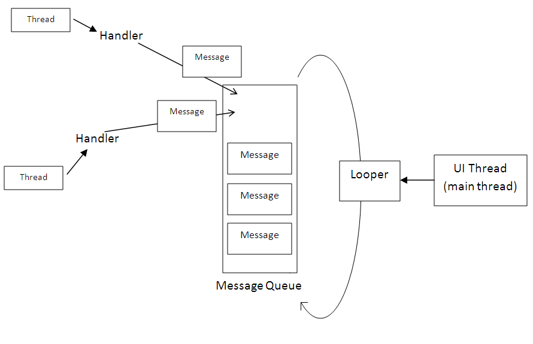

Multitarea con Android
Seminario 2 - AUS
Created by Patricio Keilty / @patokeilty

Procesos en Android
Las apps en Android se ejecutan en lo que se conoce como sandbox(arenero). El sandbox combina:
- proceso único: cada app corre en un proceso individual y distinto,
- indentidad única: cada app es asignado usuario con uid único (al instalarse),
- y sistema de archivo específico: los recursos de la app son almacenados en un directorio único por app (/data/data/<package_app_name>).
Procesos en Android ...
El prácticamente único UID
El userid puede ser de hecho compartido entre distintos procesos.
<manifest xmlns:android="http://schemas.android.com/apk/res/android"
package="ar.edu.ips.aus.android.multitask.single_thread"
android:sharedUserId="ips.android.sharedId">
<application>
...
</application>
</manifest>
Procesos en Android ...
Proceso compartido
Permite que ambas aplicaciones se corran bajo el mismo proceso.
<manifest xmlns:android=http://schemas.android.com/apk/res/android
package="ar.edu.ips.aus.android.multitask.single_thread"
android:sharedUserId="ips.android.sharedId">
<application
android:process = "ips.android.sharedProcess">
...
</application>
</manifest>
Multitasking - hilo principal
Cuando se lanza una app, el sistema crea un hilo de ejecución para la app llamado main.
Este hilo es muy importante debido a que:
- despacha los eventos de la UI a diferentes widgets
- incluidos los eventos de redraw
- el código de la app interactúa con los componentes de la UI (packages android.widget y android.view)
- suele denominarse tb UI thread
Multitasking ...
- El sistema no crea un hilo adicional para cada instancia de un componente.
- Todo componente del mismo proceso (mismo .apk) es instanciado/creado en el UI thread, y las llamadas del sistema son realizadas tb desde el mismo UI thread.
- En consecuencia, los métodos que responden a callbacks del sistema, ej. onClick(..), onKeyDown(..) para reportar acciones del usuario o el del ciclo de vida del mismo, siempre corren en el UI thread.
Multitasking ...
- Cuando la app realiza trabajo intenso en respuesta a la interacción del usuario, este modelo de hilo único puede ocasionar una pobre respuesta.
- O sea, si todo ocurre en el UI thread, operaciones largas y costosas en tiempo como acceso a la red o base de datos bloquean la UI.
- Cuando el hilo está bloqueado, los eventos no se pueden entregar (incluido el renderizado de UI). -> se torna irresponsiva (irresponsive)
- si el UI thread está bloqueado por +5 segs, salta el diálogo "La aplicación no está respondiendo: esperar? o cerrar?".
Multitasking ...
En definitiva, hay 2(tres) reglas de oro para el modelo single thread de UI de Android
- No bloquear el hilo principal (UI thread)
- No acceder a los widgets de la UI fuera del hilo principal (UI thread)
- No operar con la red (NetworkOnMainThreadException)
Hilos de trabajo
Worker/Background threads
Operaciones largas, de respuesta no-inmediata requieren entonces el uso de mas hilos de ejecución (worker/background). Pero que ocurre cuando se necesita interactuar con la UI ?? (está prohibido fuera del main thread!). Android provee algunas soluciones.Hilos de trabajo
AsyncTask
Cuando el empleo de los métodos anteriores se torna complicado o tiene inconvenientes Android provee AsyncTask
AsyncTask permite ejecutar tareas de forma asíncrona (en background) e interactuar con la UI. Las operaciones bloqueantes se realizan en un hilo de trabajo, y el resultado se puede recuperar en el hilo principal, con la ventaja de no tener que manipular los hilos explícitamente.
AsyncTask
ref: https://developer.android.com/reference/android/os/AsyncTask- se puede especificar los parámetros, el valor de progreso, el valor de retorno de la tarea, usando generics android.os.AsyncTask<Params, Progress, Result>
- método doInBackground(..) se ejecuta automáticamente en un hilo en segundo plano
- onPreExecute(), onPostExecute(Result), y onProgressUpdate(Progress) son todos invocados desde el UI thread
AsyncTask ...
ref: https://developer.android.com/reference/android/os/AsyncTask- el retorno de doInBackground(..) es enviado a onPostExecute(Result)
- se puede invocar publishProgress() en cualquier momento desde doInBackground() para que se ejecute onProgressUpdate() en el hilo principal
AsyncTask ...
Implementando ...
private class DownloadImageTask extends AsyncTask<String, Void, Bitmap> {
/**
* The system calls this to perform work in a worker thread and delivers
* it the parameters given to AsyncTask.execute()
*/
protected Bitmap doInBackground(String... urls) {
return loadImageFromNetwork(urls[0]);
}
/**
* The system calls this to perform work in the UI thread and delivers
* the result from doInBackground()
*/
protected void onPostExecute(Bitmap result) {
mImageView.setImageBitmap(result);
}
}
De Loopers, hilos y handlers
Comunicación entre hilos ...
Looper
El Looper es el responsable de procesar los mensajes de la cola de mensajes (MessageQueue). Sólo puede haber un único Looper asociado a un hilo.
Handler
La clase Handler está diseñada para intercambiar tareas y mensajes entre distintos hilos, a diferencia de AsyncTask, permite comunicar cuales quiera hilos, y no sólo limitado a UI thread con un worker thread.
Usando Handler y Looper
class LooperThread extends Thread {
public Handler mHandler;
public void run() {
Looper.prepare();
mHandler = new Handler() {
public void handleMessage(Message msg) {
// process incoming messages here
// this will run in non-ui/background thread
}
};
Looper.loop();
}
} Enviando usando Handler
Un Message :
Message msg = new Message();
msg.obj = "Esta es la voz de los marcianos ...";
handler.sendMessage(msg);
Un Runnable :
new Handler(Looper.getMainLooper()).post(new Runnable() {
@Override
public void run() {
// esto correrá en el hilo principal
}
});
HandlerThread
Un HandlerThread corresponde al hilo específico de un Looper.
private class MyHandlerThread extends HandlerThread {
Handler handler;
public MyHandlerThread(String name) {
super(name);
}
@Override
protected void onLooperPrepared() {
handler = new Handler(getLooper()) {
@Override
public void handleMessage(Message msg) {
// process incoming messages here
// this will run in non-ui/background thread
}
};
}
}
Handlers ... Runnables y Messages
- boolean post(Runnable r) : agregar Runnable a la MessageQueue
- boolean postAtTime(Runnable r, long uptimeMillis) : idem pero temporizado
- boolean postDelayed(Runnable r, long delayMillis) : idem pero con delay
- sendMessage(Message msg) : encola mensaje
- sendMessageAtFrontOfQueue(Message msg) : inserta mensaje al ppio de la cola
- sendMessageAtTime(Message msg, long uptimeMillis) : encola el mensaje a la hora especificada
- sendMessageDelayed(Message msg, long delayMillis) : encola el mensaje luego de un delay